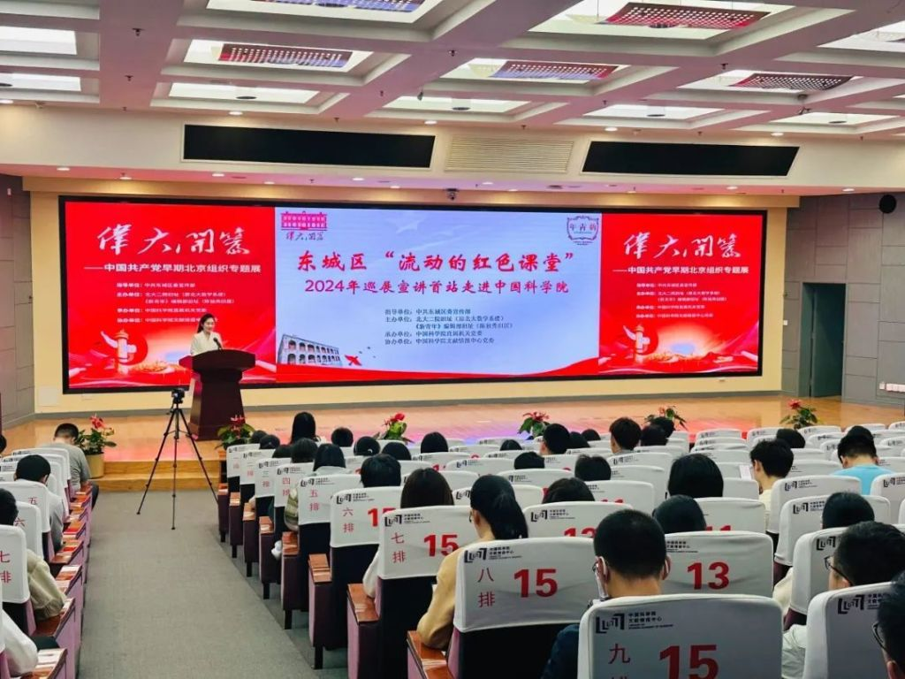

习近平总书记强调，“要把红色资源利用好、把红色传统发扬好、把红色基因传承好”。北京市东城区是新文化运动的中心、五四运动的策源地、马克思主义在中国早期传播的主阵地、中国共产党的主要孕育地之一，31处中国共产党早期北京革命活动旧址有13处位于域内。东城区推出《关于进一步加强东城区红色文化资源挖掘传播利用的实施意见》，通过“四种模式”推动红色文化薪火相传、与时俱进。
“红色文化+教育”打造挖掘阐释引领高地
作为红色文化的集聚承载地，红色是东城区的最鲜明底色。东城区充分发挥红色文化的育人功能，倾力打造富有使命感和价值感的红色文化氛围。盘活红色“家底”。全面梳理域内红色文化资源，推出《东城党史文萃》等丛书，形成东城区红色文化印记地图，涵盖35处红色地标类和遗址遗迹类点位。联动各方加强红色文化阐释，电视剧《胡同》、电影《革命者》好评如潮，专题纪录片《恰是百年风华》《我们的十年》、原创话剧《黎明》等生动讲述红色故事，在润物无声中进行启迪熏陶。
寻访红色“脉络”。发布《薪火传承——东城区党史游学地图》，推出“觉醒年代”“光辉足迹”“历史记忆”“文人志士”“日新月异”五条党史游学线路。连续10余年开展参观寻访活动，干部群众在中国美术馆观看红色题材美术作品、在中央礼品文物管理中心了解外交历程等，汲取强大的信仰力量。
打造红色“课堂”。创设爱国主义教育“大课堂”品牌，通过“现场课堂”“流动课堂”“实践课堂”等形式讲好红色故事。开设红色文化课程，将红色文化点位与学校实践课程结合，打造干部培训讲堂、学生第二思政课堂、教师教学研究基地及家庭亲子活动场所。推动“流动的红色课堂”走进高校、企业、机关、军营、社区，成为群众身边“行走的思政课”。

“红色文化+创意”打造传播利用创新高地
东城区坚持保护传承与有效利用相统一、加强创新思维赋能，增强红色文化的表现力、传播力、影响力，为红色文化传承和发展注入新的活力。 跨区域构建红色矩阵。突破红色文化点位的物理边界，与上海黄浦、山东青岛、陕西延安的革命旧址发起“隔空对话”直播活动，生动有趣的“实景课堂”实现两地资源共享、双向联动。携手北大红楼、中法大学旧址等9处域内红色文化点位开展“云游北大红楼与中国共产党早期北京革命活动旧址”等活动，让观众足不出户“云”游红色旧址群。
多维度拓展应用路径。针对红色文化点位特色，持续丰富餐饮、书店、文创店等文化供给。群众在中山公园来今雨轩不仅能品尝美味的冬菜包子，也能感受鲁迅先生曾在此留下的文化气息；在《新青年》编辑部旧址（陈独秀旧居）体验印刷《新青年》经典封面，挑选帆布包、冰箱贴等“新青年”系列文创产品，将“东城红色记忆”带回家，扩大红色文化传播辐射力。
联动式提升传播效能。依托“书香东城”全民数字化阅读平台，以“短视频+专题纪录片+图书”形式展现东城红色叙事。借力“1+18+N”融媒体矩阵，打造全面覆盖、多维立体的宣传网络。举办“永远跟党走”主题网络宣传、“祖国我想对你说”微视频录制等活动，发起“我想对党说”等微博话题，吸引群众广泛参与。
“红色文化+科技”打造融合发展先行高地
东城区利用科技手段，强化红色文化点位聚集效应，红色文化应用场景日渐普及，为群众轻松走近、深入了解、尽情感受红色文化魅力提供了丰富载体。 展示空间由单一到多元。因地制宜设计红色文化点位布局，针对大而集聚的点位，广泛运用多媒体技术、虚拟现实技术，通过更新展示方式、创新互动活动等强化聚集效应，成为群众竞相探访的新地标；针对小而分散的点位，定期检查、修缮，并运用数字化手段进行展示宣传，将红色文化的魅力传递给更多群众。
体验场景由静态到动态。精心策划推出“伟大开篇——中国共产党早期北京组织专题展”“《新青年》编辑部旧址（陈独秀旧居）专题展”，打造“初心课堂”“印象百年”沉浸式体验课堂，成为红色文化教育的热门目的地。在红色文化展陈中引入可实时语音对话的智能机器人，为参观者提供智能化人性化咨询、引导、宣传等服务，进一步提升红色文化展陈的体验感。
呈现方式由实景到虚拟。依托区块链、AI、数字人等技术，实施北大二院旧址（原北大数学系楼）展馆数藏项目，打造数智赋能红色文化资源样板间。在“故宫以东·城市盲盒”王府井线下空间特别设置红色主题场景，红色文化点位通过传统技艺剪纸结合光影的效果呈现在空间内，将红色文化内涵以可视、可听、可感、可触的样态呈现给群众。
“红色文化+治理”打造保护管理示范高地
东城区着力构建政府、学校、群团组织、社会等各方面、各领域高效协同配合的工作格局，以常态化长效化的制度机制传承红色基因，推动红色文化融入群众生产生活。
红色印记融入城市肌理。抓好红色文化保护传承利用体系建设，对北大二院旧址（原北大数学系楼）、《新青年》编辑部旧址（陈独秀旧居）等13处中国共产党早期北京革命活动旧址及周边200米范围进行整治提升，开展五四大街及32条背街小巷环境精细化整治提升工作，综合改善革命文物周边环境品质，使得承载无数红色记忆的革命旧址迎来了焕新时刻。
红色力量激发多元参与。组建由15个职能部门、17个街道、各红色文化点位产权单位组成的东城区红色文化资源挖掘传播利用联席会议，涵盖统筹谋划、综合协调、数据普查、阵地建设等多项职能。积极吸纳专家学者，成立东城区红色文化智库，以提供更加精准有效的理论指导、政策辅导和路径引导，确保红色文化资源挖掘传播利用工作的高效推进和深入发展。
红色基因引领社会风尚。成立东城区红色文化志愿服务总队，组建“理想社”红色宣讲团，打造东城品牌。擦亮“胡同里的红色讲坛”品牌，“面对面”向群众讲述党史故事。在红色文化点位举办“亢慕义斋”读书会、“党的故事我来讲”小小讲解员等活动……一系列常态化、分众化的活动，以红色文化滋养新时代文明实践，推动红色基因在群众身边广泛传播。